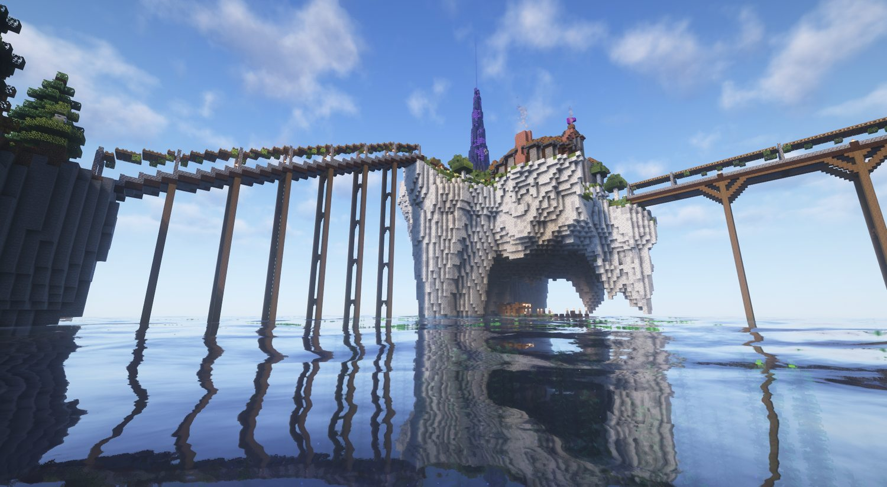
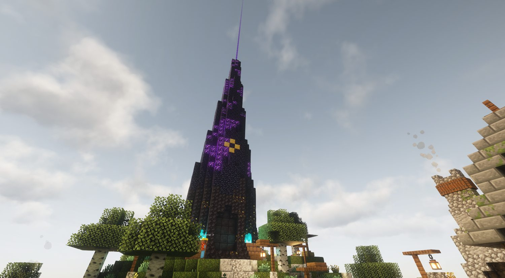
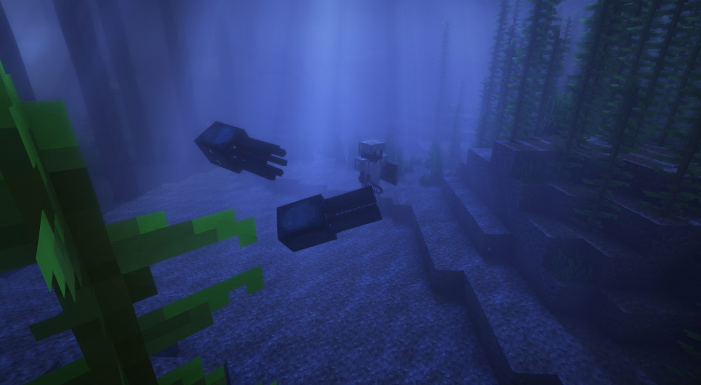
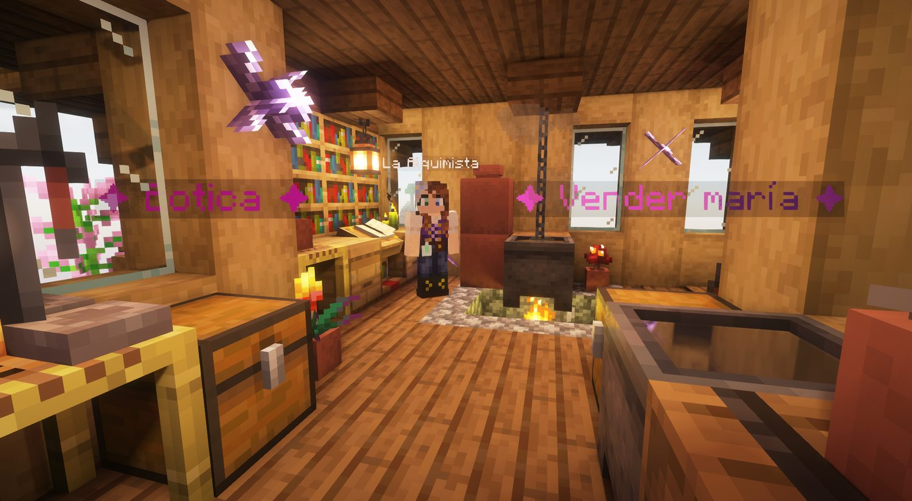
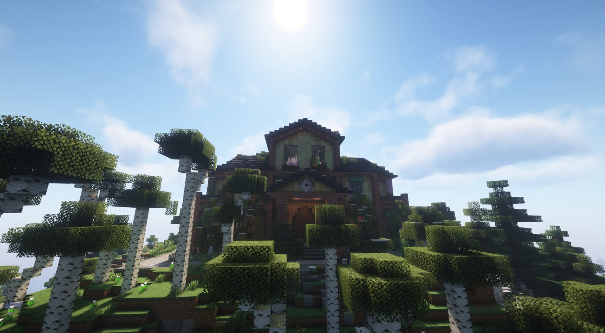

El sexto servidor que montamos. Los cinco anteriores, por lo visto, no fueron aviso suficiente.
Una Torre Negra que nadie construyó, sin puertas ni ventanas, que por las noches zumba. Vienes de recluta a averiguar por qué. Te quedas por todo lo demás.
▼ Cruza el puenteEl otro lado del puente sigue sellado. Nadie cruza todavía: la puerta cederá a su debido tiempo, y ese día se anunciará aquí — ni nosotros sabemos aún cuándo. Mientras, el zumbido se oye desde lejos.
Llegas de recluta, contratado por unos científicos para averiguar qué le pasa a la torre que zumba de noche. Y para cuando te quieres dar cuenta, estás asando bichos con un chorizo volador, cultivando maría a espaldas de esos mismos científicos y debiéndole dinero a un cerdo tabernero. Nadie te sienta a explicarte las reglas: el Reino te suelta en medio y mira a ver cuánto aguantas.

Llegaron de fuera con batas, instrumentos y la seguridad de quien todavía no ha provocado suficientes accidentes. Para ellos la Torre es CIENCIA: «los zumbidos son ondas electromagnéticas, no brujería». Miran al pueblo por encima del hombro, excavan sin descanso y siguen sin explicar por qué la Torre hace lo que le da la gana.
Nunca han salido de aquí y tampoco parece quitarles el sueño. Para ellos la magia es normal, la Torre siempre ha estado ahí y, según varias personas sin formación acreditada, da suerte. Están hasta el gorro de las excavaciones, de los becarios extraviados y de que los forasteros cambien el nombre a cosas que el pueblo ya entendía perfectamente.
El Reino vive del choque entre ambos bandos. En medio están los obreros, como Toni: capataz, carpincho, uruguayo y poseedor de muchas más curiosidades sobre capibaras que entusiasmo laboral.
Piedra negra que no refleja la luz. Sin puertas. Sin ventanas. Más vieja que el propio Reino. Por la noche zumba, porque quedarse quieta ya debía parecerle poco.

El Reino excava minas hacia su base y el misterio se abre por fases: un fondo que no parece terminar, marcas grabadas que nadie consigue leer y una puerta sellada donde, en principio, no debería haber ninguna puerta. Cada cierto tiempo la Torre pulsa y aparecen los llamados Ecos del Multiverso, sombras que parecen venir de otros Reinos y que hay que frenar entre todos antes de que conviertan la plaza en un problema colectivo.
«La Torre no nació aquí, muchacho. Nació cuando rompisteis lo que no sabíais nombrar. También he visto un pato con sombrero. Las dos cosas son verdad.» — Rancio el Profeta
Se llama El Reino 6 por algo. Hubo otros servidores, hay demasiadas coincidencias y algunas personas aseguran que, de vez en cuando, algo encuentra una grieta para pasar de uno a otro. Las personas sensatas no aseguran nada. Bastante tienen.
Cinco clases, cuatro poderes cada una y ni un hechizo repetido: aquí nadie acaba haciendo lo mismo con otro sombrero. Eliges cómo te metes en problemas —a puñetazos, a distancia, a base de fuego o curando a los que no saben esquivar— pulsas F, marcas el número y rezas por haber elegido bien. El nombre de cada clase es de coña. La hostia que reparten, mucho menos.
Se niega a morir con la misma firmeza con la que se niega una solicitud mal cumplimentada. Paraliza con papeleo, levanta escudos de ventanilla y resuelve discusiones mediante el Sellazo Oficial.
Cuanta menos vida tiene, más daño hace. Es inmune al miedo, pega antes de pensar y lleva años sin llegar a la segunda parte del proceso. Incluye Fiesta Sangrienta.
Asa enemigos con oficio, orgullo y una preocupante falta de distancia de seguridad. Lanza el Chorizo Volador, invoca el Meteoro de Choripán y consume reagentes de alquimia.
Cascarrabias, preciso y completamente dispuesto a explicar cómo se disparaba antes. Cuenta con «En mis tiempos…», Cadera de Titanio y Escopetazo a distancia.
Cura y regenera al grupo mediante magia probiótica. Cucharada de Yogur, Tarrina Familiar y la responsabilidad de mantener con vida a personas que insisten en separarse. Es la más difícil de dominar.
El Político, El Cuñao, El Reguetonero (perrea para aturdir), El Loco de los Gatos y otras decisiones difíciles de justificar. Se irán estrenando como «clase del mes».
El sistema sigue la tradición de Ultima Online: cada hechizo consume reagentes al lanzarse. Sin ajo, perla negra o ceniza sulfurosa no hay magia, solo una persona agitando las manos con mucha intención. Cuando te falte algo, el juego te dirá exactamente qué ingrediente has olvidado.
= una lluvia de fuego con nombre de comida familiar. Los reagentes se compran en la Botica de la bruja del pueblo.

Aquí el dinero se llama Cacahuate 🥜 y no cae del cielo: se suda. Picas piedra para pagarte la magia, vendes maría para comprarte el equipo, y con el equipo bajas a por más. Cada cosa que haces financia la siguiente… hasta que una mala racha en el casino lo devuelve todo a cero.

Cultiva, seca y cocina marihuana a escondidas de los científicos. La Alquimista, una viciada perdida con negocio propio, te compra el producto. Nando, un camello que habla como un poeta desde una cueva inmunda, pone las semillas.
El Señor Trapo, un cerdo con mostacho falso, te enseña a fermentar, destilar, añejar y servir tu propia cerveza en la bodega de su barco volcado. La borrachera es real: acabas andando en eses, que es la forma tradicional de comprobar la calidad.
Minero, Leñador, Hortelano, Cazador y Pescador pagan por trabajar. Solo puedes llevar tres a la vez y cambiarlos cuesta dinero, así que toca especializarse en lugar de ordeñar todos los sistemas hasta dejarlos secos.
Abres cuenta pagando comisiones cada vez más creativas y desbloqueas La Bolsa del Reino: un mercado con precios que suben y bajan solos, con sus cracks y sus subidones anunciados. Comprar barato y vender caro, pero con el Reino apostando en tu contra.
María → Cacahuates → equipo. Oficios → sueldo diario. Encargos diarios → Fichas → casino. Magia → reagentes de la Alquimista. Jefes y sagas → equipo legendario, que no se compra. Cinco vías de progreso para que siempre haya algo útil que hacer.
Y cada día, el Tablón de Encargos reparte trabajo nuevo. Porque el Reino podrá ser absurdo, pero jamás permitirá que te falten obligaciones. Bájate al Tablón ▼
En el pueblo hay un Tablón de Encargos físico. Cada día ofrece un puñado aleatorio de encargos escogidos entre muchas posibilidades: matar bichos, minar, talar, cultivar, pescar, caminar y otras formas de demostrar que sigues entrando voluntariamente.
No tienes que aceptar todos los encargos. Escoges cuáles te interesan y dejas el resto para personas con otras prioridades o menos amor propio.
Los encargos cambian cada día, así que no estarás repitiendo eternamente la misma tarea con otro número delante.
Completar encargos hace avanzar una barra de niveles con recompensas. Esa barra es el Pase del Reino, responsable directo del pensamiento «hago uno más y lo dejo».
Cada encargo también entrega Fichas 🎟️, una moneda completamente separada del Cacahuate.
Las Fichas solo se gastan en sus propios sistemas: tragaperras del casino, cofres de lootbox y una tienda exclusiva de Fichas. No entran en la economía normal ni inflan el precio de media isla porque alguien tuvo una tarde productiva.
El Tablón es el motivo para volver cada día, escoger una tanda distinta de objetivos y avanzar poco a poco en el Pase. Entras para completar dos encargos. Luego ves que te falta poco para el siguiente nivel. El resto lo decide una barra.
No es un adorno que da vueltas a tu alrededor pidiendo atención. Te sigue, gana experiencia contigo y, según sube de nivel, te va soltando ventajas de verdad. Empieza siendo poca cosa. Termina siendo el motivo por el que sales vivo de la mina.
Cuanto más juegas con ella, más fuerte se hace. La mascota tiene su propia progresión: la subes, la mejoras y la conviertes en algo a lo que tenerle cariño y respeto a partes iguales.
No es cosmética: mejora al jugador. Más daño, más aguante, más suerte con el botín, algo de regeneración… según la mascota y su nivel. Ventajas que se notan, no confeti.
Cosméticos habrá aparte, y para presumir. Esto es otra cosa: una compañera que decides subir porque te compensa llevarla, no solo porque queda mona en las capturas.
Empieza inútil y decorativa. Sube de nivel y, de repente, te está salvando la vida. Es un arco de personaje más largo que el de mucha gente del pueblo.
Zonas de aventura hechas a mano —pasillos, salas y una arena de jefe— para bajar con tus colegas. Lo de «instanceada» significa que cada grupo juega su propia versión: si entráis vosotros y luego otros, cada party tiene la suya, sin veros ni pisaros. Al terminar, la copia se borra sola.
Reúnes al grupo de amigos con los que vas a bajar.
La entrada se abre con un clic —cero comandos— y os teletransporta dentro.
Bichos que salen por tandas, cofres por el camino y un jefe al final.
Repartís el botín y la instancia se limpia sola. Otra vez cuando queráis.
Bajo la iglesia hay una cripta que nadie debería pisar: no-muertos, faroles de alma, ventanales morados y humedad de la mala. Al fondo espera El Padre Podrido, un antiguo cura de la parroquia que no llevó del todo bien lo de descansar en paz. La iglesia prohíbe bajar. Vosotros bajaréis igual.
Debajo de todo hay kilómetros de pasillo amarillo. Moqueta húmeda, fluorescentes que zumban y ninguna ventana. Once niveles, cada uno peor que el anterior. Aquí no se viene a farmear: se viene a salir.
Hay cosas ahí. Algunas solo miran. Una se queda quieta mientras la mires; en cuanto apartas la vista, está más cerca.
Las paredes cambian de sitio. Las luces se van quince segundos. Aparecen carteles que antes no estaban.
Ves mensajes de gente que no está conectada. Alguien entra. Alguien se va. No hay nadie.
Lleva la cuenta de los minutos que llevas dentro. Y hace algo con ellos.
El Vestíbulo y su moqueta infinita · La Zona Habitable, donde algo gotea · Las Tuberías · Las Piscinas, que casi parecen un descanso · La Sala de Servidores · La Biblioteca, con estanterías que siguen más allá del final del mundo · y unos cuantos que es mejor que descubras tú.
Morir no te saca. Solo te devuelve al principio.
La puerta que baja aquí sigue cerrada. La abrirá una misión, cuando llegue el momento.
Mientras tú haces tus cosas, el mundo hace las suyas. Cambia de estación, monta eventos sin avisar demasiado, protege tus construcciones y —cuando la palmas— procura no arruinarte la tarde.
Cada tanto salta algo con aviso previo: fiebre del oro, noche de horda, doble botín, expedición minera, abundancia de hierro… Buffs y retos que duran un rato. Si ibas a currar, mira el aviso: igual es tu día.
Primavera, verano, otoño e invierno, con su clima, sus colores y sus bichos de temporada. Zorros y lobos cuando aprieta el frío; ranas y luciérnagas cuando afloja.
Al morir dejas una tumba con tus cosas donde caíste y una brújula que te lleva de vuelta. Y lo que de verdad te importa lo puedes ASEGURAR: no lo pierdes ni muerto. Objetos de misión y libros, a salvo siempre.
Pones un cartel en un cofre y queda cerrado con tu nombre. Se acabó lo de confiar en la buena fe de gente que juega a un server de humor negro.
Talas el tronco entero de un hachazo y brota uno nuevo. Recoges madera rápido sin dejar el bosque hecho un solar.
En el pueblo y las zonas habitadas nadie te puede matar. Las peleas entre jugadores solo cuentan fuera. Y los creepers ya no te tiran la casa.
Un vistazo a TODO de golpe: lo que ya está montado, lo que llega pronto y lo que asoma en el horizonte. Sí, es mucho. Ese es el problema.
Y lo que no está en esta lista es porque contarlo sería destriparte la Torre. Algunas cosas mejor las descubres tú.

Los NPC hablan mediante una caja a pantalla completa, no por el chat. Así puedes leer el lore aunque otras personas mantengan una conversación crucial sobre patatas. Es una función nativa de Minecraft y no necesita mods.
Las acciones importantes se manejan mediante objetos: un diario para las misiones, un contrato para escoger clase y una brújula mágica que solo tú ves. Los comandos existen en alguna parte. Tú no tendrás que perseguirlos.
El juego enseña una mecánica cada vez. Un personaje te explica cómo funciona, completas su misión y la desbloqueas. Primero aprendes. Después ya puedes estropearlo por tu cuenta.
Para jugar, nada especial.
El Reino 6 funciona sin cuenta premium y sin instalar mods: entras con Minecraft normal y corriente. El chat de voz por proximidad es opcional y requiere dos descargas; dejaremos preparados el tutorial y los archivos. Sin premium, sin 458 mods y sin convertir la tarde en mantenimiento informático.
Aquí publicaremos las novedades, las nuevas sagas y la fecha de apertura en cuanto la tengamos. Hasta entonces, esta sección cumplirá la noble función de alimentar la impaciencia.